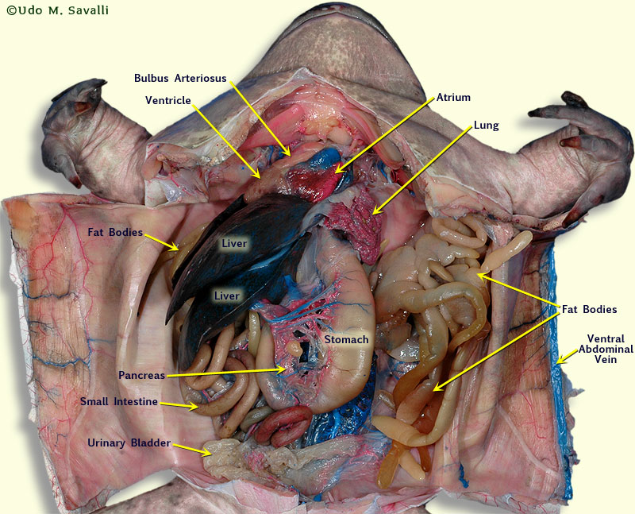
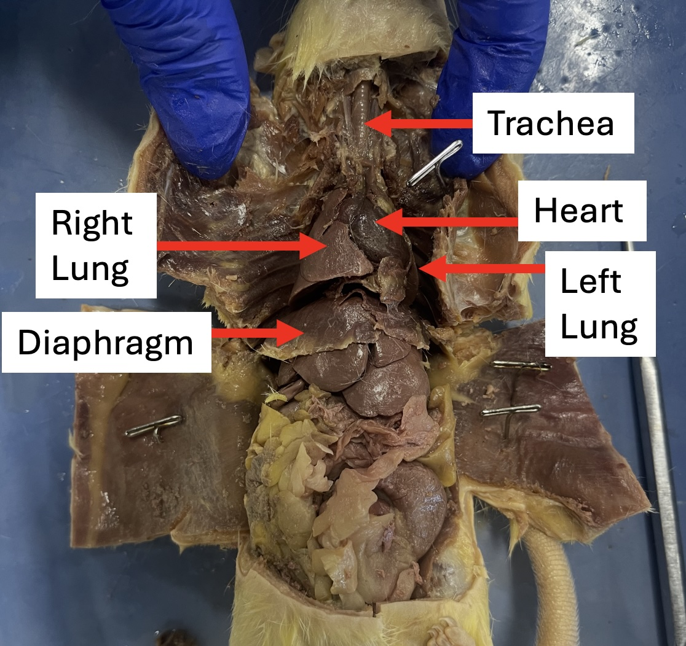

Virtual Desensitization Protocol for Biological Labs
Despite the critical role of practical laboratory sessions in biology education, a significant number of secondary and university students experience disruptive anxiety when handling biological specimens or performing dissections. This psychological barrier manifests behaviorally through lab avoidance and cognitively by inducing panic, which increases cognitive load and severely impedes the processing of essential biological information. Traditional pedagogical approaches often fail to address the affective domain of learning, leaving anxious students without systematic support to overcome their fears. Consequently, there is a critical need for an intervention that integrates psychological desensitization techniques with educational technology to gradually reduce anxiety, enabling students to independently apply emotional self-regulation and confidently participate in physical laboratory environments.
Outline of the gradual exposure protocol to demonstrate how the digital-hybrid tool is implemented in a classroom setting:
Master deep breathing and positive self-talk to lower your resting heart rate. Focus on the expanding circle.
Pattern: Inhale for 4s, Hold for 2s, Exhale for 4s.
Review real dissection anatomy diagrams of the organism while maintaining your breathing pattern.


Watch the clinical procedure. Keep the volume low or muted. If you feel panic, look away and click the return button.
Engage with the digital dissection interface below. Practice the motor control needed for the physical lab. The simulation will open safely in a new tab.
(Opens in a new tab. Return here once you have finished the virtual incision.)
You have successfully unlearned the fear response. Approach the physical lab station with confidence using your practiced self-talk.